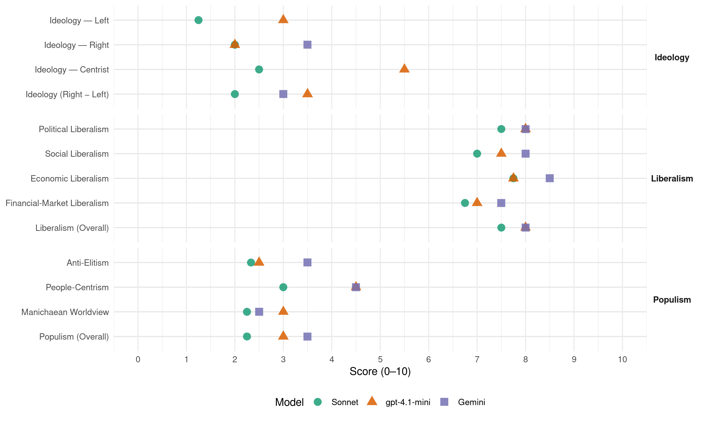

PSD (Portugal, 2005)
manifesto_id 35313_200502
Get full text: This site shows derived annotations and short verbatim quotes only. The full manifesto text is © Manifesto Project / WZB — obtain it via manifesto-project.wzb.eu using the manifesto_id above.
Headline scores
| Dimension | Sonnet | gpt-4.1-mini | Gemini |
|---|---|---|---|
| Populism (Overall) | 2.2 | 3.0 | 3.5 |
| Anti-Elitism | 2.3 | 2.5 | 3.5 |
| People-Centrism | 3.0 | 4.5 | 4.5 |
| Manichaean Worldview | 2.2 | 3.0 | 2.5 |
| Ideology (Right − Left) | 2.0 | 3.5 | 3.0 |
| Liberalism (Overall) | 7.5 | 8.0 | 8.0 |
| Political Liberalism | 7.5 | 8.0 | 8.0 |
| Social Liberalism | 7.0 | 7.5 | 8.0 |
| Economic Liberalism | 7.8 | 7.8 | 8.5 |
| Financial-Market Liberalism | 6.8 | 7.0 | 7.5 |
Evidence per dimension
Economic Liberalism
Gemini · score 9.0 · verified · chunk 1
“economia aberta de mercado”
valoriza o liberalismo e a livre iniciativa característica de uma economia aberta de mercado, apostado no reconhecimento do mérito
Gemini · score 8.0 · verified · chunk 2
“Concluir o processo de privatização do notariado”
aligeirar a burocracia e eliminar a duplicação de tarefas. Concluir o processo de privatização do notariado, em fase já adiantada
Gemini · score 8.0 · verified · chunk 3
“liberalização do mercado, da promoção”
política energética ao nível da liberalização do mercado, da promoção da eficiência energética, da minimização
Gemini · score 9.0 · verified · chunk 4
“impulso decisivo à liberalização do mercado”
liderados pelo PPD/PSD deram assim um impulso decisivo à liberalização do mercado, à eficiência energética
gpt-4.1-mini · score 8.0 · verified · chunk 1
“valoriza o liberalismo e a livre iniciativa característica de uma economia aberta de mercado”
· O PPD/PSD é um partido que valoriza o liberalismo e a livre iniciativa característica de uma economia aberta de mercado, apostado no reconhecimento do mérito e na capacidade de afirmação pessoal e social, cada vez mais necessários no mundo de hoje.
gpt-4.1-mini · score 7.0 · verified · chunk 2
“reduzir a despesa pública no médio prazo”
Colocar a despesa sob controlo, incluindo a via de um Sector Público mais eficiente, permitiria que mais recursos se focassem nas necessidades reais de desenvolvimento de Portugal. A Reforma em curso no Sector de Saúde é um bom exemplo de uma estratégia para aumentar a qualidade e ir de encontro às necessidades da população, enquanto se procuram limitar a pressões na despesa publica no médio prazo… A maioria da legislação foi aprovada em menos de 2 anos e parece em linha com as recomendações da OCDE.
gpt-4.1-mini · score 8.0 · verified · chunk 3
“promoção das exportações, da criação de competências de gestão”
· a competitividade empresarial, através da promoção das exportações, da criação de competências de gestão, da promoção de novos mecanismos de financiamento e do incentivo à qualidade e à inovação tecnológica e não tecnológica;
gpt-4.1-mini · score 8.0 · verified · chunk 4
“promover o enquadramento necessário para assegurar a vitalidade das unidades produtivas nacionais”
…Sem empresas saudáveis, dinâmicas e empreendedoras, o desafio da globalização não será vencido. Neste contexto é, pois, necessário continuar a promover o enquadramento necessário para assegurar a vitalidade das unidades produtivas nacionais, propiciando um contexto privilegiado para o surgimento de novos projectos…
Sonnet · score 9.0 · verified · chunk 1
“valoriza o liberalismo e a livre iniciativa”
O PPD/PSD é um partido que valoriza o liberalismo e a livre iniciativa característica de uma economia aberta de mercado
Sonnet · score 7.0 · verified · chunk 2
“Prosseguir as Parcerias Público-Privadas lançando em especial a construção de novos hospitais”
promoting public-private partnerships and market competition in health sector as part of structural reform
Sonnet · score 7.0 · verified · chunk 3
“liberalização do mercado, da promoção da eficiência energética”
prosseguir as medidas de política energética ao nível da liberalização do mercado, da promoção da eficiência energética, da minimização dos efeitos
Sonnet · score 8.0 · verified · chunk 4
“liberalização de mercado, caminho indutor da concorrência”
No tocante à liberalização de mercado, caminho indutor da concorrência que obriga à qualidade de serviço, a qual beneficia os consumidores
Financial-Market Liberalism
Gemini · score 8.0 · verified · chunk 1
“tributação parcial dos lucros dos bancos”
TRIBUTAÇÃO QUE VIGORA NA ZONA FRANCA DA MADEIRA Previu-se, pela primeira vez, a tributação parcial dos lucros dos bancos que operam na Zona Franca
Gemini · score 7.0 · verified · chunk 2
“avaliação do risco de incumprimento por parte dos concedestes de crédito”
grandes utilizadores” da acção executiva. Criar um ónus de avaliação do risco de incumprimento por parte dos concedestes de crédito. Criar um dever de transparência
Gemini · score 7.0 · verified · chunk 3
“mecanismos de financiamento de capital”
PMEs que recorrem a mecanismos de financiamento de capital de risco ou fundos de garantia.
Gemini · score 8.0 · verified · chunk 4
“mecanismos de financiamento de capital de risco”
PMEs que recorrem a mecanismos de financiamento de capital de risco ou fundos de garantia.
gpt-4.1-mini · score 7.0 · verified · chunk 1
“combate à fraude e evasão fiscais, tornando o sistema mais justo e reforçando as condições de concorrência empresarial”
…redução das taxas marginais do IRS, compensando a perda de receita pela eliminação de alguns benefícios fiscais; reforçaram-se fortemente também, em 2005, as condições para o combate à fraude e evasão fiscais, tornando o sistema mais justo e reforçando as condições de concorrência empresarial. Este caminho da simplificação e de aumento da justiça fiscal tem que prosseguir.
gpt-4.1-mini · score 7.0 · verified · chunk 3
“Reforçar mecanismos de garantia, como o reforço do capital das 3 Sociedades de Garantia Mútua”
· Reforçar mecanismos de garantia, como o reforço do capital das 3 Sociedades de Garantia Mútua já constituídas e do Fundo de Contra-garantia Mútua, do capital do Fundo de Garantia e Titularização de Créditos, e do apoio ao microcrédito,
gpt-4.1-mini · score 7.0 · verified · chunk 4
“duplicando, até 2010, o número de PMEs que recorrem a mecanismos de financiamento de capital de risco”
…Reforçar mecanismos de garantia, como o reforço do capital das 3 Sociedades de Garantia Mútua já constituídas e do Fundo de Contra-garantia Mútua, do capital do Fundo de Garantia e Titularização de Créditos, e do apoio ao microcrédito, duplicando, até 2010, o número de PMEs que recorrem a mecanismos de financiamento de capital de risco ou fundos de garantia…
Sonnet · score 8.0 · verified · chunk 1
“taxas de inflação e de juro são as mais baixas”
os agentes económicos estão mais confiantes, a economia mostra hoje sinais de retoma, as taxas de inflação e de juro são as mais baixas dos últimos 30 anos.
Sonnet · score 6.0 · verified · chunk 2
“mecanismos de garantia de fundos de pensões, de portabilidade de direitos e reservas financeiras”
introducing pension fund guarantee mechanisms and portability of financial reserves as part of pension reform
Sonnet · score 6.0 · verified · chunk 3
“novos mecanismos de financiamento”
a competitividade empresarial, através da promoção das exportações, da criação de competências de gestão, da promoção de novos mecanismos de financiamento e do incentivo à qualidade
Sonnet · score 7.0 · verified · chunk 4
“acesso a capital para a criação e desenvolvimento”
O acesso a capital para a criação e desenvolvimento das empresas é um obstáculo com que estas se deparam frequentemente
Political Liberalism
Gemini · score 9.0 · verified · chunk 1
“princípio do Estado de Direito”
intransigente a dignidade da pessoa humana, no respeito total pelo princípio do Estado de Direito, assegurando que o Estado deve estar ao serviço
Gemini · score 8.0 · verified · chunk 2
“num Estado de Direito não há liberdade”
essencial do exercício pleno de direitos e liberdades: num Estado de Direito não há liberdade sem segurança e sem um
Gemini · score 7.0 · verified · chunk 3
“aprofundamento dos direitos de cidadania”
centrar-se em duas linhas de integração - aprofundamento dos direitos de cidadania e atenção especial às segundas
Gemini · score 8.0 · verified · chunk 4
“reforçar a participação democrática dos cidadãos”
voto electrónico… Agora pretendemos REFORÇAR A PARTICIPAÇÃO DEMOCRÁTICA DOS CIDADÃOS, através de:
gpt-4.1-mini · score 8.0 · verified · chunk 1
“defende de forma intransigente a dignidade da pessoa humana, no respeito total pelo princípio do Estado de Direito”
· O PPD/PSD é um partido personalista, que defende de forma intransigente a dignidade da pessoa humana, no respeito total pelo princípio do Estado de Direito, assegurando que o Estado deve estar ao serviço da pessoa e não a pessoa ao serviço do Estado.
gpt-4.1-mini · score 8.0 · verified · chunk 2
“confiança dos cidadãos no sistema judicial”
Só esta linha política pode consolidar a confiança dos cidadãos no sistema judicial. No entanto, a chamada crise da justiça tem razões mais fundas, que exigem uma intervenção do poder político, talvez uma revisão cons-titucional, no sentido de reforçar a le-gi-timidade do poder judicial no seu todo.
gpt-4.1-mini · score 8.0 · verified · chunk 3
“a cultura da qualidade e da segurança na construção”
· Introduzir uma cultura da qualidade e da segurança na construção, nomeadamente assegurando o reforço estrutural dos edifícios históricos.
gpt-4.1-mini · score 8.0 · verified · chunk 4
“participação na NATO, como alicerce do nosso sistema de defesa e de segurança”
…participação na NATO, como alicerce do nosso sistema de defesa e de segurança, e o contributo decisivo para a estabilidade mundial do reforço da relação transatlântica e, em particular, da aliança com os Estados Unidos, consolidando ainda as relações luso-canadianas. Um governo PPD/PSD promoverá o aprofundamento da relação com os países que nos estão geograficamente mais próximos…
Sonnet · score 8.0 · verified · chunk 1
“respeito total pelo princípio do Estado de Direito”
O PPD/PSD é um partido personalista, que defende de forma intransigente a dignidade da pessoa humana, no respeito total pelo princípio do Estado de Direito
Sonnet · score 7.0 · verified · chunk 2
“DISPONÍVEL PARA CELEBRAR UM PACTO DE REGIME com as restantes forças políticas”
PPD/PSD offering a cross-party constitutional pact to reform the judiciary and reinforce democratic legitimacy
Sonnet · score 7.0 · verified · chunk 3
“garantia da transparência do procedimento”
de garantia da transparência do procedimento – uma vez que a opção do governo foi a realização de um concurso público intencional;
Sonnet · score 8.0 · verified · chunk 4
“democracia e prosperidade”
conciliar os interesses nacionais e o desenvolvimento da UE como um espaço de paz e segurança, liberdade e justiça, democracia e prosperidade
Liberalism (Overall)
Gemini · score 8.0 · verified · chunk 1
“economia aberta de mercado”
valoriza o liberalismo e a livre iniciativa característica de uma economia aberta de mercado, apostado no reconhecimento do mérito
Gemini · score 8.0 · verified · chunk 2
“num Estado de Direito não há liberdade”
essencial do exercício pleno de direitos e liberdades: num Estado de Direito não há liberdade sem segurança e sem um
Gemini · score 8.0 · verified · chunk 3
“liberalização do mercado, da promoção”
política energética ao nível da liberalização do mercado, da promoção da eficiência energética, da minimização
Gemini · score 8.0 · verified · chunk 4
“impulso decisivo à liberalização do mercado”
liderados pelo PPD/PSD deram assim um impulso decisivo à liberalização do mercado, à eficiência energética
gpt-4.1-mini · score 8.0 · verified · chunk 1
“valoriza o liberalismo e a livre iniciativa característica de uma economia aberta de mercado”
· O PPD/PSD é um partido que valoriza o liberalismo e a livre iniciativa característica de uma economia aberta de mercado, apostado no reconhecimento do mérito e na capacidade de afirmação pessoal e social, cada vez mais necessários no mundo de hoje.
gpt-4.1-mini · score 8.0 · verified · chunk 2
“confiança dos cidadãos no sistema judicial”
Só esta linha política pode consolidar a confiança dos cidadãos no sistema judicial. No entanto, a chamada crise da justiça tem razões mais fundas, que exigem uma intervenção do poder político, talvez uma revisão cons-titucional, no sentido de reforçar a le-gi-timidade do poder judicial no seu todo.
gpt-4.1-mini · score 8.0 · verified · chunk 3
“promoção das exportações, da criação de competências de gestão”
· a competitividade empresarial, através da promoção das exportações, da criação de competências de gestão, da promoção de novos mecanismos de financiamento e do incentivo à qualidade e à inovação tecnológica e não tecnológica;
gpt-4.1-mini · score 8.0 · verified · chunk 4
“promover o enquadramento necessário para assegurar a vitalidade das unidades produtivas nacionais”
…Sem empresas saudáveis, dinâmicas e empreendedoras, o desafio da globalização não será vencido. Neste contexto é, pois, necessário continuar a promover o enquadramento necessário para assegurar a vitalidade das unidades produtivas nacionais, propiciando um contexto privilegiado para o surgimento de novos projectos…
Sonnet · score 8.0 · verified · chunk 1
“valoriza o liberalismo e a livre iniciativa”
O PPD/PSD é um partido que valoriza o liberalismo e a livre iniciativa característica de uma economia aberta de mercado
Sonnet · score 7.0 · verified · chunk 2
“Prosseguir as Parcerias Público-Privadas lançando em especial a construção de novos hospitais”
consistent pro-market, pro-competition, pro-rule-of-law orientation across health, justice, education and social security
Sonnet · score 7.0 · verified · chunk 3
“liberalização do mercado, da promoção da eficiência energética”
prosseguir as medidas de política energética ao nível da liberalização do mercado, da promoção da eficiência energética, da minimização dos efeitos
Sonnet · score 8.0 · verified · chunk 4
“liberalização de mercado, caminho indutor da concorrência”
No tocante à liberalização de mercado, caminho indutor da concorrência que obriga à qualidade de serviço, a qual beneficia os consumidores
Anti-Elitism
Gemini · score 4.0 · verified · chunk 1
“cristalização de interesses corporativos”
tem sido minado. Pelo peso excessivo que o Estado tomou na nossa sociedade. Pela cristalização de interesses corporativos. Por pressões de divisão social.
Gemini · score 3.0 · verified · chunk 2
“Apesar da retórica, dos partidos de esquerda”
capacidades financeiras do País. Apesar da retórica, dos partidos de esquerda, o processo de transformação em curso
gpt-4.1-mini · score 3.0 · verified · chunk 1
“Pelo peso excessivo que o Estado tomou na nossa sociedade. Pela cristalização de interesses corporativos.”
…demonstrado por esta capacidade de adaptação às mudanças tem sido minado. Pelo peso excessivo que o Estado tomou na nossa sociedade. Pela cristalização de interesses corporativos. Por pressões de divisão social. Pela criação periódica de ilusões quanto aos esforços que temos de fazer para garantir o crescimento de uma forma sustentada num mundo cada vez mais competitivo. Continuar o programa de reformas iniciado há 3 anos é o pressuposto básico para garantir as condições estruturais para uma vida melhor para todos nós.
gpt-4.1-mini · score 2.0 · verified · chunk 2
“Apesar da retórica, dos partidos de esquerda”
Apesar da retórica, dos partidos de esquerda, o processo de transformação em curso não se destina a diminuir os Serviços na área da Saúde, nem a eliminar direitos adquiridos mas antes a aumentar a sua Disponibilidade e Qualidade, tornando, ao mesmo tempo, o sector sustentável para as capacidades financeiras do País.
Sonnet · score 3.0 · verified · chunk 1
“cristalização de interesses corporativos”
Pelo peso excessivo que o Estado tomou na nossa sociedade. Pela cristalização de interesses corporativos. Por pressões de divisão social.
Sonnet · score 2.0 · verified · chunk 2
“O Partido Socialista, que deixou um SNS centrado em si mesmo”
criticising the Socialist Party for leaving a self-centred NHS with low productivity and financial mismanagement
Sonnet · score 2.0 · mixed · chunk 3
“uma imposição discricionária do governo PS”
uma opção sem qualquer suporte científico e baseada numa opinião de uma comissão que nada tinha nem de científica, nem de independente; · uma imposição discricionária do governo PS.
Sonnet · score 2.0 · verified · chunk 4
“incapacidade dos governos socialistas em delinear”
que acabou por vir a ser sufocada pela incapacidade dos governos socialistas em delinear uma estratégia, definir um rumo
Ideology — Centrist
gpt-4.1-mini · score 7.0 · verified · chunk 1
“O PPD/PSD é um partido personalista, que defende de forma intransigente a dignidade da pessoa humana”
· O PPD/PSD é um partido personalista, que defende de forma intransigente a dignidade da pessoa humana, no respeito total pelo princípio do Estado de Direito, assegurando que o Estado deve estar ao serviço da pessoa e não a pessoa ao serviço do Estado.
gpt-4.1-mini · score 4.0 · verified · chunk 2
“política de imigração, que valoriza o enorme contributo e oportunidade dessa nova realidade social”
A política de imigração, que valoriza o enorme contributo e oportunidade dessa nova realidade social, estrutura-se em três eixos: DEFESA DA IMIGRAÇÃO LEGAL EM CONFORMIDADE COM AS POSSIBILIDADES REAIS DO PAÍS, INTEGRAÇÃO EFECTIVA DOS IMIGRANTES E LUTA CONTRA A IMIGRAÇÃO ILEGAL.
Sonnet · score 3.0 · verified · chunk 1
“Quero assinar um Contrato com os Portugueses”
Queremos que os nossos compromissos sejam claros para todos. Quero assinar um Contrato com os Portugueses.
Sonnet · score 2.0 · verified · chunk 2
“Os Portugueses têm hoje um serviço de saúde mais rápido”
appealing to all Portuguese citizens with pragmatic service-delivery achievements rather than ideological framing
Sonnet · score 3.0 · verified · chunk 3
“O nosso objectivo primeiro são as pessoas”
O nosso objectivo primeiro são as pessoas e o seu bem estar. Mas temos consciência de que para conseguir níveis adequados de qualidade de vida
Sonnet · score 2.0 · verified · chunk 4
“melhoria da qualidade de vida de todos”
tem como desiderato essencial a melhoria da qualidade de vida de todos os cidadãos e de todos os portugueses
Ideology — Left
gpt-4.1-mini · score 3.0 · verified · chunk 1
“Um mundo de ilusões, de aparentes facilidades ou receitas milagrosas, que caracteriza as propostas do PS”
…a construção de uma cultura fundada nestes valores é um trabalho difícil, mas está demonstrado que as pessoas respondem a comportamentos justos e à reciprocidade. Um mundo de ilusões, de aparentes facilidades ou receitas milagrosas, que caracteriza as propostas do PS, criam um conjunto de organizações, de comunidades que não são autênticas, onde todos fazem de conta procurando apenas o seu interesse.
gpt-4.1-mini · score 3.0 · verified · chunk 2
“partidos de esquerda, o processo de transformação em curso não se destina a diminuir os Serviços”
Apesar da retórica, dos partidos de esquerda, o processo de transformação em curso não se destina a diminuir os Serviços na área da Saúde, nem a eliminar direitos adquiridos mas antes a aumentar a sua Disponibilidade e Qualidade, tornando, ao mesmo tempo, o sector sustentável para as capacidades financeiras do País.
Sonnet · score 1.0 · verified · chunk 1
“mecanismos de redistribuição não paternalistas”
se consagrem mecanismos de redistribuição não paternalistas em favor dos mais carenciados. Trata-se de construir uma sociedade competitiva
Sonnet · score 1.0 · verified · chunk 2
“redistribuição em grande escala, da classe média, para a classe média”
criticising large-scale redistribution as inefficient, explicitly rejecting left-populist redistribution logic
Sonnet · score 2.0 · verified · chunk 3
“diferenciação positiva das famílias com mais dependentes”
Manter, no âmbito das prestações sociais, a directiva de diferenciação positiva das famílias com mais dependentes e menos recursos.
Sonnet · score 1.0 · verified · chunk 4
“apoio ao microcrédito”
do Fundo de Garantia e Titularização de Créditos, e do apoio ao microcrédito, duplicando, até 2010, o número de PMEs
Ideology (Right − Left)
Gemini · score 3.0 · verified · chunk 1
“defensor de uma identidade nacional”
O PPD/PSD é um partido empenhado na construção europeia, defensor de uma identidade nacional e dos valores pátrios que deram corpo à Nação Portuguesa
Gemini · score 3.0 · verified · chunk 2
“LUTA CONTRA A IMIGRAÇÃO ILEGAL”
INTEGRAÇÃO EFECTIVA DOS IMIGRANTES E LUTA CONTRA A IMIGRAÇÃO ILEGAL. Para cumprir esses objectivos, foram
gpt-4.1-mini · score 4.0 · verified · chunk 1
“Um mundo de ilusões, de aparentes facilidades ou receitas milagrosas, que caracteriza as propostas do PS”
…a construção de uma cultura fundada nestes valores é um trabalho difícil, mas está demonstrado que as pessoas respondem a comportamentos justos e à reciprocidade. Um mundo de ilusões, de aparentes facilidades ou receitas milagrosas, que caracteriza as propostas do PS, criam um conjunto de organizações, de comunidades que não são autênticas, onde todos fazem de conta procurando apenas o seu interesse.
gpt-4.1-mini · score 3.0 · verified · chunk 2
“política de imigração, que valoriza o enorme contributo e oportunidade dessa nova realidade social”
A política de imigração, que valoriza o enorme contributo e oportunidade dessa nova realidade social, estrutura-se em três eixos: DEFESA DA IMIGRAÇÃO LEGAL EM CONFORMIDADE COM AS POSSIBILIDADES REAIS DO PAÍS, INTEGRAÇÃO EFECTIVA DOS IMIGRANTES E LUTA CONTRA A IMIGRAÇÃO ILEGAL.
Sonnet · score 2.0 · verified · chunk 1
“cristalização de interesses corporativos”
Pelo peso excessivo que o Estado tomou na nossa sociedade. Pela cristalização de interesses corporativos. Por pressões de divisão social.
Sonnet · score 2.0 · verified · chunk 2
“DEFESA DA IMIGRAÇÃO LEGAL EM CONFORMIDADE COM AS POSSIBILIDADES REAIS DO PAÍS”
mild right-leaning populist flavour on immigration, but overall the manifesto is technocratic and programmatic
Sonnet · score 2.0 · verified · chunk 3
“uma imposição discricionária do governo PS”
uma opção sem qualquer suporte científico e baseada numa opinião de uma comissão que nada tinha nem de científica, nem de independente; · uma imposição discricionária do governo PS.
Sonnet · score 2.0 · verified · chunk 4
“incapacidade dos governos socialistas em delinear”
que acabou por vir a ser sufocada pela incapacidade dos governos socialistas em delinear uma estratégia, definir um rumo
Ideology — Right
Gemini · score 3.0 · verified · chunk 1
“defensor de uma identidade nacional”
O PPD/PSD é um partido empenhado na construção europeia, defensor de uma identidade nacional e dos valores pátrios que deram corpo à Nação Portuguesa
Gemini · score 4.0 · verified · chunk 2
“LUTA CONTRA A IMIGRAÇÃO ILEGAL”
INTEGRAÇÃO EFECTIVA DOS IMIGRANTES E LUTA CONTRA A IMIGRAÇÃO ILEGAL. Para cumprir esses objectivos, foram
gpt-4.1-mini · score 2.0 · verified · chunk 1
“defensor de uma identidade nacional e dos valores pátrios que deram corpo à Nação Portuguesa”
…PPD/PSD é um partido empenhado na construção europeia, defensor de uma identidade nacional e dos valores pátrios que deram corpo à Nação Portuguesa, herdeiro de um sentido atlântico, que importa permanentemente revitalizar, e de uma aliança profunda com os povos de expressão portuguesa.
gpt-4.1-mini · score 2.0 · verified · chunk 2
“combate à imigração ilegal e suas redes”
Aumentar-se-á o combate à imigração ilegal e suas redes. A fiscalização dos fluxos migratórios, a prevenção e a repressão da exploração de mão-de-obra ilegal passa pela desburocratização do Serviço de Estrangeiros e Fronteiras e pela coresponsabilização dos governos dos países de origem.
Sonnet · score 2.0 · verified · chunk 1
“defensor de uma identidade nacional”
O PPD/PSD é um partido empenhado na construção europeia, defensor de uma identidade nacional e dos valores pátrios que deram corpo à Nação Portuguesa
Sonnet · score 2.0 · verified · chunk 2
“DEFESA DA IMIGRAÇÃO LEGAL EM CONFORMIDADE COM AS POSSIBILIDADES REAIS DO PAÍS”
immigration policy framed around legal channels and national capacity, with combating illegal immigration
Sonnet · score 2.0 · verified · chunk 3
“política de imigração global e coerente”
O trabalho inovador dos XV e XVI Governos permitiu, pela primeira vez, em Portugal uma política de imigração global e coerente e uma verdadeira política de acolhimento com vista à integração.
Sonnet · score 2.0 · verified · chunk 4
“forte identidade nacional constitui uma vantagem”
Portugal é um país com uma forte identidade nacional o que, num mundo cada vez mais global, constitui uma vantagem que temos de potenciar
Manichaean Worldview
Gemini · score 3.0 · verified · chunk 1
“verdade e não a ilusão”
presidiu a essa escolha: a consciência de que só o trabalho, a responsabilização, as contas bem feitas, a justiça e transparência, a verdade e não a ilusão, permitem garantir
Gemini · score 2.0 · verified · chunk 2
“impotência confrangedora em lançar qualquer reforma”
total incapacidade de renovar, numa impotência confrangedora em lançar qualquer reforma estrutural, por receio de custos
gpt-4.1-mini · score 4.0 · verified · chunk 1
“Está em causa a opção entre a competitividade na Europa e a periferia da Europa, entre o progresso e o retrocesso, entre a riqueza e a pobreza.”
…qual dos caminhos Portugal irá seguir? Está em causa a opção entre a competitividade na Europa e a periferia da Europa, entre o progresso e o retrocesso, entre a riqueza e a pobreza. Um País só pode distribuir riqueza se a souber criar primeiro. Sem ilusões. Com trabalho.
gpt-4.1-mini · score 2.0 · verified · chunk 2
“punição das situações de selecção adversa”
com uma Entidade Reguladora da Saúde (ERS) eficaz na defesa dos direitos dos pacientes, na punição das situações de selecção adversa e na promoção da eficiência individual e em rede dos prestadores de cuidados de saúde.
Sonnet · score 3.0 · verified · chunk 1
“entre o progresso e o retrocesso”
Está em causa a opção entre a competitividade na Europa e a periferia da Europa, entre o progresso e o retrocesso, entre a riqueza e a pobreza.
Sonnet · score 2.0 · verified · chunk 2
“total incapacidade de renovar, numa impotência confrangedora”
attacking the Socialist Party as totally incapable of reform, contrasting with PPD/PSD’s achievements
Sonnet · score 2.0 · verified · chunk 3
“o PS, em 6 anos, não aprovou um único”
facto tanto mais relevante quando o PS, em 6 anos, não aprovou um único. Elaborámos o Plano Sectorial da Rede Natura
Sonnet · score 2.0 · verified · chunk 4
“gestão irregular dos fundos Europeus”
estrangulamento imposto por Bruxelas nos anos 2003 e 2004, ao financiamento da Ciência, motivado por uma gestão irregular dos fundos Europeus no período (2000-2002) do Governo Socialista
People-Centrism
Gemini · score 5.0 · verified · chunk 1
“O Povo Português já demonstrou a sua capacidade”
ajustamentos, adiados em Portugal desde 1996, muito mais difíceis. O Povo Português já demonstrou a sua capacidade de trabalho. Conseguiu coisas notáveis nos últimos
Gemini · score 4.0 · verified · chunk 2
“ir de encontro às necessidades da população”
aumentar a qualidade e ir de encontro às necessidades da população, enquanto se procuram limitar a pressões
gpt-4.1-mini · score 6.0 · verified · chunk 1
“O Povo Português já demonstrou a sua capacidade de trabalho.”
…muito difícil, pela situação de grave crise então encontrada, mas também porque a conjuntura internacional se deteriorou, tornando os ajustamentos, adiados em Portugal desde 1996, muito mais difíceis. O Povo Português já demonstrou a sua capacidade de trabalho. Conseguiu coisas notáveis nos últimos 30 anos, em termos de desenvolvimento social e de aproximação aos seus pares, uma forte recuperação na escolarização, na adaptação do sector produtivo e de serviços, na construção de infraestruturas e obras públicas, acessibilidades e de equipamentos colectivos.
gpt-4.1-mini · score 3.0 · verified · chunk 2
“um sistema nacional de serviços de saúde de resposta mais rápida e mais humana”
Pretende-se um sistema nacional de serviços de saúde de resposta mais rápida e mais humana, com mais liberdade de escolha, com uma “via verde” de acesso ao Serviço Nacional de Saúde (SNS) para os que mais precisam de cuidados ou que menos os podem pagar; com maior ênfase na prevenção; com custos controlados e ganhos de produtividade reinvestidos na melhoria da qualidade dos cuidados prestados e com uma Entidade Reguladora da Saúde (ERS) eficaz na defesa dos direitos dos pacientes, na punição das situações de selecção adversa e na promoção da eficiência individual e em rede dos prestadores de cuidados de saúde.
Sonnet · score 4.0 · verified · chunk 1
“O Povo Português já demonstrou a sua capacidade”
O Povo Português já demonstrou a sua capacidade de trabalho. Conseguiu coisas notáveis nos últimos 30 anos
Sonnet · score 3.0 · verified · chunk 2
“o nosso compromisso, promovendo uma segunda geração de reformas”
framing reforms as a commitment to the Portuguese people and their well-being
Sonnet · score 2.0 · verified · chunk 3
“O nosso objectivo primeiro são as pessoas”
O nosso objectivo primeiro são as pessoas e o seu bem estar. Mas temos consciência de que para conseguir níveis adequados de qualidade de vida
Sonnet · score 3.0 · verified · chunk 4
“melhoria da qualidade de vida de todos os cidadãos”
tem como desiderato essencial a melhoria da qualidade de vida de todos os cidadãos e de todos os portugueses
Populism (Overall)
Gemini · score 4.0 · verified · chunk 1
“cristalização de interesses corporativos”
tem sido minado. Pelo peso excessivo que o Estado tomou na nossa sociedade. Pela cristalização de interesses corporativos. Por pressões de divisão social.
Gemini · score 3.0 · verified · chunk 2
“Apesar da retórica, dos partidos de esquerda”
capacidades financeiras do País. Apesar da retórica, dos partidos de esquerda, o processo de transformação em curso
gpt-4.1-mini · score 4.0 · verified · chunk 1
“Pelo peso excessivo que o Estado tomou na nossa sociedade. Pela cristalização de interesses corporativos.”
…demonstrado por esta capacidade de adaptação às mudanças tem sido minado. Pelo peso excessivo que o Estado tomou na nossa sociedade. Pela cristalização de interesses corporativos. Por pressões de divisão social. Pela criação periódica de ilusões quanto aos esforços que temos de fazer para garantir o crescimento de uma forma sustentada num mundo cada vez mais competitivo. Continuar o programa de reformas iniciado há 3 anos é o pressuposto básico para garantir as condições estruturais para uma vida melhor para todos nós.
gpt-4.1-mini · score 2.0 · verified · chunk 2
“Apesar da retórica, dos partidos de esquerda”
Apesar da retórica, dos partidos de esquerda, o processo de transformação em curso não se destina a diminuir os Serviços na área da Saúde, nem a eliminar direitos adquiridos mas antes a aumentar a sua Disponibilidade e Qualidade, tornando, ao mesmo tempo, o sector sustentável para as capacidades financeiras do País.
Sonnet · score 3.0 · verified · chunk 1
“cristalização de interesses corporativos”
Pelo peso excessivo que o Estado tomou na nossa sociedade. Pela cristalização de interesses corporativos. Por pressões de divisão social.
Sonnet · score 2.0 · verified · chunk 2
“O Partido Socialista, que deixou um SNS centrado em si mesmo”
partisan criticism of the Socialist Party framed as failure to serve citizens, mild populist contrast
Sonnet · score 2.0 · verified · chunk 3
“uma imposição discricionária do governo PS”
uma opção sem qualquer suporte científico e baseada numa opinião de uma comissão que nada tinha nem de científica, nem de independente; · uma imposição discricionária do governo PS.
Sonnet · score 2.0 · verified · chunk 4
“incapacidade dos governos socialistas em delinear”
que acabou por vir a ser sufocada pela incapacidade dos governos socialistas em delinear uma estratégia, definir um rumo
Social Liberalism